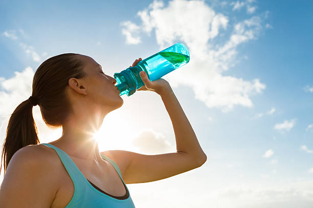
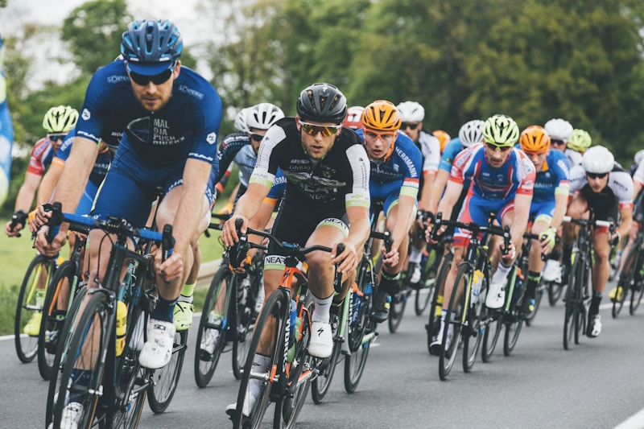
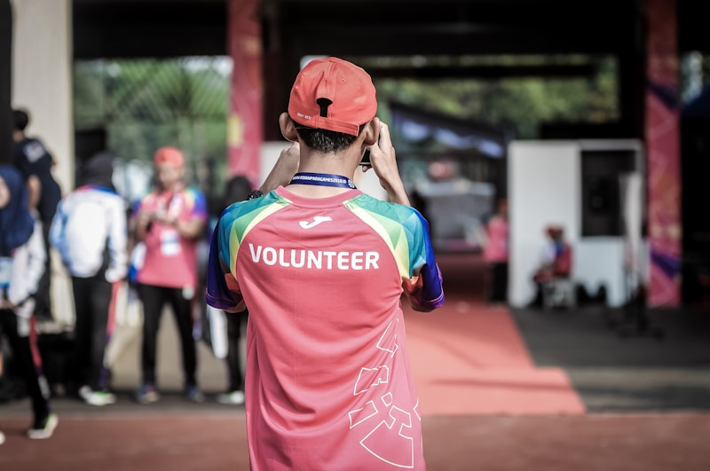
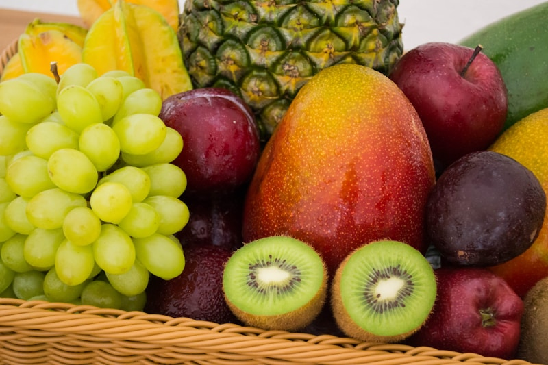

Health & Well-Being Gallery
Explore inspiring images celebrating mental health, physical fitness, nutrition, and community wellness.

Mindfulness & Mental Health
Small daily habits that build resilience and calm.

Active Living
Movement that strengthens body and mind alike.

Nutrition & Hydration
Fuel that supports focus and long-term health.

Community Support
Connection as one of the strongest predictors of well-being.
Sleep & Recovery
Rest as the foundation everything else is built on.

Hydration
A simple daily habit with an outsized impact.
Preventive Healthcare
Catching issues early through regular checkups.
Immunization
A proven tool for protecting individual and public health.

Daily Exercise
Building strength and endurance through movement.

Food Safety & Hygiene
Safe food practices for healthier lives.
Meditation Practice
Creating calm and focus in everyday life.
Healthcare Professionals
Dedicated care that supports healthier communities.

Team Sports
Fitness, teamwork and social connection combined.

Community Volunteering
Working together to create positive change.

Fresh Fruits
Nature's source of vitamins and energy.
Outdoor Wellness
Improving health through nature and fresh air.

Digital Well-Being
Creating healthier relationships with technology.

Telemedicine
Healthcare support anytime, anywhere.

Smart Health Technology
Using innovation to improve personal wellness.

Awareness
Breaking stigma through education and support.